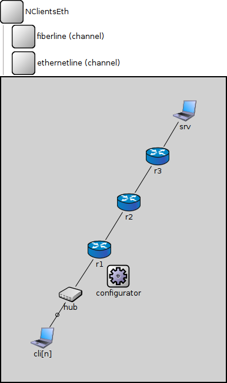
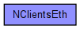

(no description)
The following diagram shows usage relationships between types. Unresolved types are missing from the diagram. Click here to see the full picture.

The following diagram shows inheritance relationships for this type. Unresolved types are missing from the diagram. Click here to see the full picture.
| Name | Type | Default value | Description |
|---|---|---|---|
| n | int |
| Name | Value | Description |
|---|---|---|
| isNetwork |
| Name | Type | Default value | Description |
|---|---|---|---|
| r1.routingTable6.routingTableFile | xml | ||
| r1.networkLayer.ipv6.procDelay | double | 0s | |
| r1.ppp.ppp.mtu | int | 4470 | |
| r1.eth.mac.promiscuous | bool | false |
if true, all packets are received, otherwise only the ones with matching destination MAC address |
| r1.eth.mac.address | string | "auto" |
MAC address as hex string (12 hex digits), or "auto". "auto" values will be replaced by a generated MAC address in init stage 0. |
| r1.eth.mac.txrate | double | 100Mbps |
maximum data rate supported by this station (bit/s); actually chosen speed may be lower due to auto- configuration. 0 means fully auto-configured. |
| r1.eth.mac.duplexEnabled | bool | true |
whether duplex mode can be enabled or not; whether MAC will actually use duplex mode depends on the result of the auto-configuration process (duplex is only possible with DTE-to-DTE connection). |
| r1.eth.mac.mtu | int | 1500 | |
| r2.routingTable6.routingTableFile | xml | ||
| r2.networkLayer.ipv6.procDelay | double | 0s | |
| r2.ppp.ppp.mtu | int | 4470 | |
| r2.eth.mac.promiscuous | bool | false |
if true, all packets are received, otherwise only the ones with matching destination MAC address |
| r2.eth.mac.address | string | "auto" |
MAC address as hex string (12 hex digits), or "auto". "auto" values will be replaced by a generated MAC address in init stage 0. |
| r2.eth.mac.txrate | double | 100Mbps |
maximum data rate supported by this station (bit/s); actually chosen speed may be lower due to auto- configuration. 0 means fully auto-configured. |
| r2.eth.mac.duplexEnabled | bool | true |
whether duplex mode can be enabled or not; whether MAC will actually use duplex mode depends on the result of the auto-configuration process (duplex is only possible with DTE-to-DTE connection). |
| r2.eth.mac.mtu | int | 1500 | |
| r3.routingTable6.routingTableFile | xml | ||
| r3.networkLayer.ipv6.procDelay | double | 0s | |
| r3.ppp.ppp.mtu | int | 4470 | |
| r3.eth.mac.promiscuous | bool | false |
if true, all packets are received, otherwise only the ones with matching destination MAC address |
| r3.eth.mac.address | string | "auto" |
MAC address as hex string (12 hex digits), or "auto". "auto" values will be replaced by a generated MAC address in init stage 0. |
| r3.eth.mac.txrate | double | 100Mbps |
maximum data rate supported by this station (bit/s); actually chosen speed may be lower due to auto- configuration. 0 means fully auto-configured. |
| r3.eth.mac.duplexEnabled | bool | true |
whether duplex mode can be enabled or not; whether MAC will actually use duplex mode depends on the result of the auto-configuration process (duplex is only possible with DTE-to-DTE connection). |
| r3.eth.mac.mtu | int | 1500 | |
| cli.routingTable6.routingTableFile | xml | ||
| cli.pingApp.destAddr | string | "" | |
| cli.pingApp.srcAddr | string | "" | |
| cli.pingApp.packetSize | double | 56B |
of ping payload, in bytes |
| cli.pingApp.interval | double | 1s |
time to wait between pings (can be random) |
| cli.pingApp.hopLimit | double | 32 |
TTL or hopLimit for IP packets |
| cli.pingApp.count | double | 0 |
stop after count ping requests, 0 means continuously |
| cli.pingApp.startTime | double | uniform(0s,this.interval) |
send first ping at startTime |
| cli.pingApp.stopTime | double | 0s |
send no pings after stopTime, 0 means forever |
| cli.pingApp.printPing | bool | true |
dump on stdout |
| cli.networkLayer.ipv6.procDelay | double | 0s | |
| cli.ppp.ppp.mtu | int | 4470 | |
| cli.eth.mac.promiscuous | bool | false |
if true, all packets are received, otherwise only the ones with matching destination MAC address |
| cli.eth.mac.address | string | "auto" |
MAC address as hex string (12 hex digits), or "auto". "auto" values will be replaced by a generated MAC address in init stage 0. |
| cli.eth.mac.txrate | double | 100Mbps |
maximum data rate supported by this station (bit/s); actually chosen speed may be lower due to auto- configuration. 0 means fully auto-configured. |
| cli.eth.mac.duplexEnabled | bool | true |
whether duplex mode can be enabled or not; whether MAC will actually use duplex mode depends on the result of the auto-configuration process (duplex is only possible with DTE-to-DTE connection). |
| cli.eth.mac.mtu | int | 1500 | |
| srv.routingTable6.routingTableFile | xml | ||
| srv.pingApp.destAddr | string | "" | |
| srv.pingApp.srcAddr | string | "" | |
| srv.pingApp.packetSize | double | 56B |
of ping payload, in bytes |
| srv.pingApp.interval | double | 1s |
time to wait between pings (can be random) |
| srv.pingApp.hopLimit | double | 32 |
TTL or hopLimit for IP packets |
| srv.pingApp.count | double | 0 |
stop after count ping requests, 0 means continuously |
| srv.pingApp.startTime | double | uniform(0s,this.interval) |
send first ping at startTime |
| srv.pingApp.stopTime | double | 0s |
send no pings after stopTime, 0 means forever |
| srv.pingApp.printPing | bool | true |
dump on stdout |
| srv.networkLayer.ipv6.procDelay | double | 0s | |
| srv.ppp.ppp.mtu | int | 4470 | |
| srv.eth.mac.promiscuous | bool | false |
if true, all packets are received, otherwise only the ones with matching destination MAC address |
| srv.eth.mac.address | string | "auto" |
MAC address as hex string (12 hex digits), or "auto". "auto" values will be replaced by a generated MAC address in init stage 0. |
| srv.eth.mac.txrate | double | 100Mbps |
maximum data rate supported by this station (bit/s); actually chosen speed may be lower due to auto- configuration. 0 means fully auto-configured. |
| srv.eth.mac.duplexEnabled | bool | true |
whether duplex mode can be enabled or not; whether MAC will actually use duplex mode depends on the result of the auto-configuration process (duplex is only possible with DTE-to-DTE connection). |
| srv.eth.mac.mtu | int | 1500 |
network NClientsEth { parameters: int n; types: channel fiberline extends DatarateChannel { delay = 1us; datarate = 512Mbps; } channel ethernetline extends DatarateChannel { delay = 0.1us; } submodules: configurator: FlatNetworkConfigurator6; r1: Router6; r2: Router6; r3: Router6; cli[n]: StandardHost6; srv: StandardHost6; hub: EtherHub; connections: for i=0..n-1 { cli[i].ethg++ <--> ethernetline <--> hub.ethg++; } hub.ethg++ <--> ethernetline <--> r1.ethg++; r1.ethg++ <--> ethernetline <--> r2.ethg++; r2.ethg++ <--> ethernetline <--> r3.ethg++; r3.ethg++ <--> ethernetline <--> srv.ethg++; //XXX // Mixing ethernet and ppp currently doesn't work, due to a bug in // FlatNetworkConfigurator6::determineGateIndex. // // r1.pppg++ <--> fiberline <--> r2.pppg++; // r2.pppg++ <--> fiberline <--> r3.pppg++; // r3.pppg++ <--> fiberline <--> srv.pppg++; // }